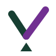
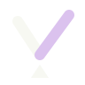
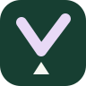

VECTIS · IDENTITY DIRECTION 01
A small lever.
A meaningful difference.
A V that rests on a fulcrum. A simple symbol for helping a team do useful work with less effort.

vectisBY YAVONALABS

For the studio’s forest-green sidebar
One color. Same identity.

Browser tabs and compact spaces
The V
The initial makes the mark recognizable without relying on a database cylinder or an admin-panel grid.
The fulcrum
The small triangle gives the V a second meaning: a lever. Vectis is Latin for lever.
The lift
The longer violet arm rises forward. Rounded ends keep the geometry approachable; forest green connects it to YavonaLabs.